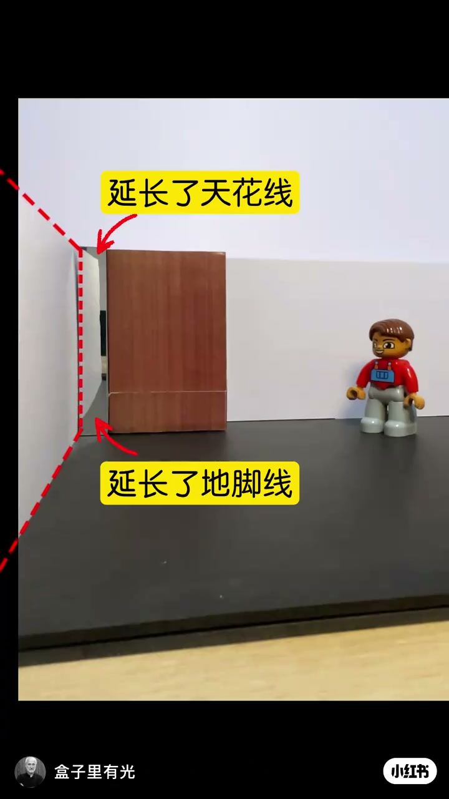
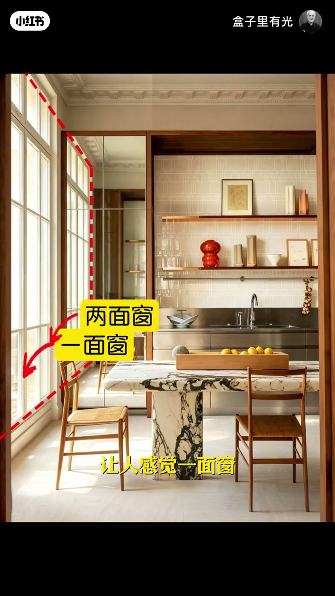
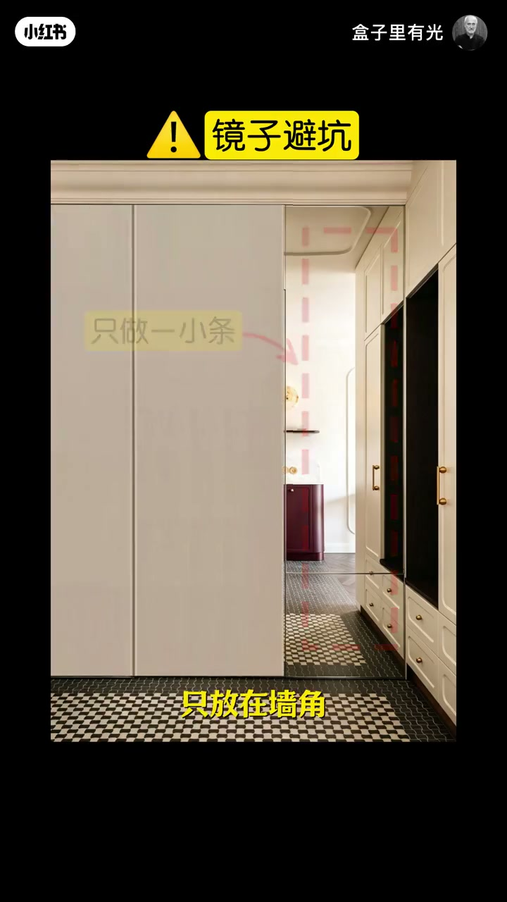
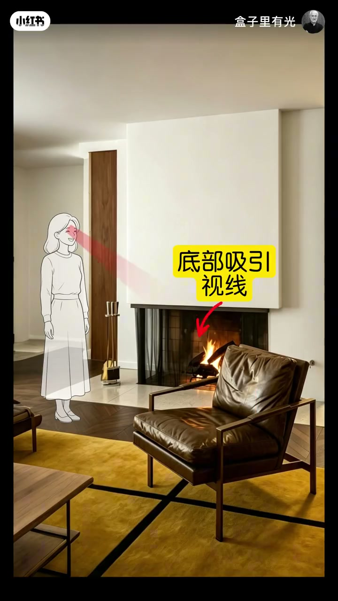
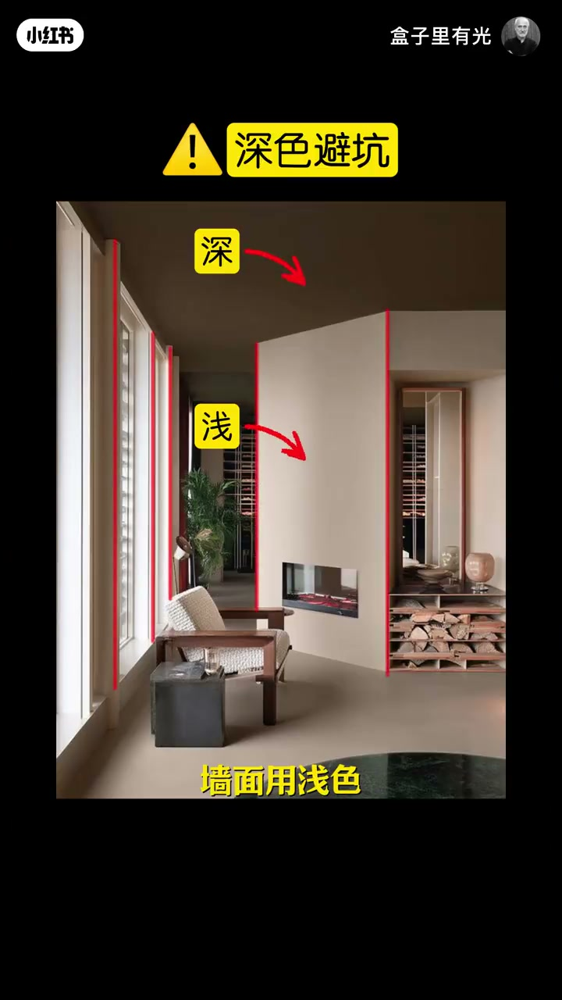

内容要点
盒子里有光用模型与实景讲「家显大」的三条视觉路径：小条镜子延长地脚线/天花线、上浅下深弱化视觉重量、深色天花配合浅色墙拉伸高度。每条方法都配剂量边界——镜子别大面积正对人，浅色别铺满，深天花时墙面必须保持浅色。
知识结构
墙角加小条镜延长角线降闭塞；窗边镜柜可成「两面窗」。镜子只做一小条、放墙角，避廉价与正对人。
背景墙上深压迫；改上浅下深，让注意力落底部以降压抑。浅色勿铺满，否则单调。
白天花像堵住墙顶；深天花让墙显还能上升。深天花必须配浅墙，墙也深则上升感消失。
想让家「看大」，先改视觉结构而不是堆软装：延长视线用剂量可控的镜条；弱化重量用上浅下深；拉伸高度用深天花+浅墙。三条都有明确反例——过量镜、满屋浅、深天花配深墙。
00:00-00:29墙角小条镜延长视线；镜子避坑
开场指着局促墙角：加一条镜子，就能延长地脚线与天花线，增加视觉长度、降低闭塞感。00:04 模型用黄框标出「延长了天花线／延长了地脚线」，红虚线沿镜面反射把角线画长。
同一逻辑落到窗边：柜子改成镜面，一面窗会感觉变成两面窗，房间更亮。00:13 实景用「一面窗／两面窗」对照钉死效果。接着立刻踩刹车——镜子不要太多，大面积显廉价，正对人会不踏实；正确做法是一小条只放在墙角，00:24「镜子避坑」页把剂量写成可检查项。



00:29-01:03上浅下深：把注意力压到下方
第二法是弱化视觉重量。背景墙若上面颜色深，注意力被吸在上方，空间显压抑；把上面换成浅色、下面保留深色，底部更吸引注意，压抑感下降。模型「上浅／下深」与 00:50 壁炉实景「底部吸引视线」是同一机制的两种画面。
边界同样清楚：浅色不要用太多，全浅会单调；上浅下深才能既有装饰层次，又不压抑。

01:03-01:37深色天花拉伸高度；墙面必须保持浅色
第三法拉伸视线高度：天花全白时，墙面像被顶死，显沉闷压抑；天花改深色，墙面显得还能向上升高。墙边加一条深色边也能弱化「被堵住」的感觉。
关键配对是「天花深 + 墙面浅」才有上升感；若墙也换成深色，上升感立刻被抵消。01:28「深色避坑」页把「深／浅」分别钉在天花与墙面上——这是整条视频的收束纪律。

完整转录（57段）
以下文本由 Whisper medium 模型自动转录，可能存在少量识别误差，已尽可能修正。
你看啊 这个墙角显得很局促
加一条镜子
镜子延长了地角线和天花线
增加了视觉长度
就降低了闭塞感
把窗边的柜子改成镜面
增加了视觉长度
让人感觉一面窗变成了两面窗
房间显得更明亮了
那镜子不要用太多
大面积用会显得很廉价
正对着人还会感觉很不踏实
这种一小条只放在墙角
既能让房间显得更大
又能避免廉价感和正对着人的问题
那除了延长视线
我们还可以弱化视觉重量
一个背景墙
上面颜色深
你的注意力就在上面
就会感觉很压抑
把上面换成浅色
下面保留深色
像在下面更吸引你的注意力
就大大降低了压抑感
上面的深色食材感觉很压抑
改成白色
底部保留深色
现在底部更吸引你的视线
就降低了压抑感
那浅色不要用太多
如果都是浅色
就会感觉很单调
上面用浅色
下面用深色
就既有很强的装饰效果
又不会显得很压抑
那除了以上的方法
还可以拉伸视线的高度
当天花是白色时
你就感觉墙面
彻底被天花堵住了
感觉很压抑
当我们把天花改成深色
就感觉墙面还能向上升高
就降低了压抑感
全白色的天花感觉很沉嫩
在墙边加一条深色
现在就感觉墙面还能上升
就弱化了之前的沉嫩感
那天花用深色
墙面用浅色
就会给人上升感
如果墙面也换成深色
就降低了刚才的上升感
所以天花用深色时
墙面就要用浅色